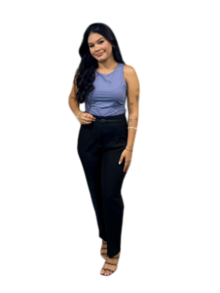
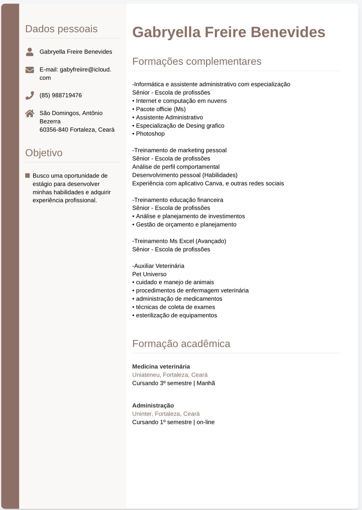

Formação acadêmica
Medicina Veterinária
UniAteneu | 3º semestre
Administração
Uninter | 2º semestre
Portfólio Profissional
"Busco oportunidades para desenvolver minhas habilidades e crescer profissionalmente nas áreas que amo."

Sobre mim
Sou acadêmica do 3º semestre de Medicina Veterinária pela UniAteneu, movida por uma paixão genuína pelo cuidado animal. Minha trajetória é complementada por uma formação técnica em Auxiliar de Veterinária, o que me proporcionou uma base prática sólida desde o início dos meus estudos.
Simultaneamente, curso o 2º semestre de Administração na Uninter. Essa formação dupla me permite unir a sensibilidade clínica com uma visão estratégica de gestão, desenvolvendo competências em marketing, ferramentas office e um atendimento ao cliente de excelência, focado em resultados e empatia, conseguindo também trabalhar e focar na área da administração.
Uma visão detalhada da minha jornada acadêmica, especializações e competências técnicas desenvolvidas nas áreas de saúde e gestão.
UniAteneu | 3º semestre
Uninter | 2º semestre
Prática clínica e suporte hospitalar
Comunicação e resolução de conflitos
Conhecimentos teóricos e práticos
Estou disponível para novos desafios e colaborações profissionais. Entre em contato pelos canais abaixo.
Emailgabyfreiire@icloud.com Telefone(85) 98871-9476 Instagram@GabyyfreiireCeará, Brasil
Estou ansiosa para aplicar meus conhecimentos em sua clínica ou empresa.

Adicione o arquivo assets/curriculo-gabryella.png para visualizar o currículo aqui.